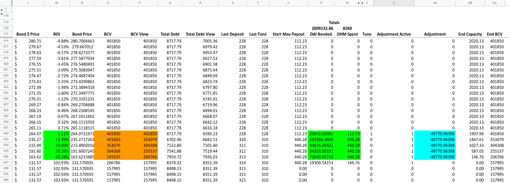

yAcademy Olympus Bond review
Review Resources: Support Doc Olympus bond pricing mechanics Olympus bond simulator
Residents:
- Engn33r
Table of Contents
- Review Summary
- Scope
- Code Evaluation Matrix
- Findings Explanation
- High Findings
- Medium Findings
- Low Findings
- Gas Savings Findings
- 1. Gas - Use != 0 for gas savings (engn33r)
- 2. Gas - Unnecessary zero initialization (engn33r)
- 3. Gas - Use prefix in loops (engn33r)
- 4. Gas - Cache array length before loop (engn33r)
- 5. Gas - Bitshift is cheaper for powers of two (engn33r)
- 6. Gas - Remove unused functions from imported libraries (engn33r)
- 7. Gas - Remove unused variable (engn33r)
- 8. Gas - Cache variable for reuse (engn33r)
- 9. Gas - Tidy up _handlePayout logic (engn33r)
- 10. Gas - Redundant return variable (engn33r)
- 11. Gas - Use unchecked when no risk of overflow or underflow (engn33r)
- 12. Gas - Move variable assignment to avoid overwrite (engn33r)
- 13. Gas - Using simple comparison (engn33r)
- Informational Findings
- 1. Informational - Bond purchase size does not impact price (engn33r)
- 2. Informational - Frontrunning changes price (engn33r)
- 3. Informational - Unclear if default tuning parameters are optimal (engn33r)
- 4. Informational - Add a check to limit debtBuffer to 100% (engn33r)
- 5. Informational - Function format inconsistency (engn33r)
- 6. Informational - Variable name nitpick (engn33r)
- 7. Informational - TransferHelper.sol not from solmate (engn33r)
- 8. Informational - CloneERC20.sol missing EIP-2612 code (engn33r)
- 9. Informational - Incorrect comment (engn33r)
- 10. Informational - Confusing variable naming (engn33r)
- 11. Informational - Expired markets are never “closed” (engn33r)
- 12. Informational - Legitimate tokens disallowed (engn33r)
- 13. Informational - Tokens with non-string metadata disallowed (engn33r)
- 14. Informational - vesting and expiry sometimes used interchangeably (engn33r)
- 15. Informational - market price functions consistency (engn33r)
- 16. Informational - Use variable instead of magic numbers (engn33r)
- Final remarks
- About yAcademy
- Appendix and FAQ
Review Summary
Olympus Bond
The purpose of Olympus Bond is to provide a permissionless system for creating Olympus-style bond markets for any token pair. No maintenance or whitelisting will be necessary to create a new market for a base-quote token pair. The Olympus-style bonding mechanism provides numerous benefits to projects compared to standard token emissions. The Olympus Bond code includes several changes compared to the existing Olympus Pro bond system. The most notable difference is the permissionless nature of the Bond system and extensibility that will allow the contract architecture to adapt as necessary over time. Some of the core pricing mechanics of Olympus Bond are borrowed from existing Olympus contracts such as BondDepository.sol.
The main branch of the Olympus Bonds Repo was reviewed over 18 days, 3 of which were used to create an initial overview of the contract. The code review was performed between April 19 and May 7, 2022. The code was reviewed by 1 resident for a total of 43 man hours (Engn33r: 43 hours). The review was limited to one specific commit.
Scope
The commit reviewed was 1550298fe9618e861201787cd7fc2648566cf6af of the OlympusDAO bonds repository. The review covered the entire repository at this specific commit but focused on the contract code in the /src directory.
After the findings were presented to the Olympus Bond team, fixes were made and included in a separate audit-changes branch, with the latest commit hash of 146e2ef6a49d5ea43be32e95aed29609d6bd2290. Comments on the fixes were provided by the development team, but a new security review was not performed on the revised code (e.g., to determine examine the mitigations or determine whether new vulnerabilities were introduced by the mitigations).
The review is a code review to identify potential vulnerabilities in the code. The reviewers did not investigate security practices or operational security and assumed that privileged accounts could be trusted. The reviewers did not evaluate the security of the code relative to a standard or specification. The review may not have identified all potential attack vectors or areas of vulnerability.
yAcademy and the residents make no warranties regarding the security of the code and do not warrant that the code is free from defects. yAcademy and the residents do not represent nor imply to third party users that the code has been audited nor that the code is free from defects. By deploying or using the code, Olympus DAO and and users agree to use the code at their own risk.
Code Evaluation Matrix
| Category | Mark | Description |
|---|---|---|
| Access Control | Average | While modifiers were applied to functions that needed them, this was one part of the codebase that was incomplete. The access control modifiers are planned to be changed before production and the specific modifiers used during the review were placeholders for where the updated modifiers will go. |
| Mathematics | Average | Solidity 0.8.10 is used, which provides overflow and underflow protection. The few locations with unchecked code were not at risk of overflows or underflows. |
| Complexity | Average | No assembly was used (excluding imported libraries) and the code architecture is well designed. The code is clearly written with well-chosen variable names and good NatSpec documentation is found throughout. The most complex part of the code is the pricing mechanics, which are fully internal to Bond (no oracles or TWAPs), but which includes many variables that all feed into a final price calculation. |
| Libraries | Average | The libraries used are from trustworthy sources. While the solmate libraries use lower level solidity features for gas savings, they are widely used and considered a safe option. |
| Decentralization | Average | Because the access controls will be changed before production, it is hard to judge what roles have what levels of access. However, the Ohm Bond system is designed in a way to allow anyone to create a market and manage it as the market owner, providing significant decentralization. |
| Code stability | Good | The code was frozen when the review started and was close to production ready, with the exception of the access control modifiers. The scope that was set at the start of the code review did not change after the review started. |
| Documentation | Good | Documentation for the project exists and the code had NatSpec comments for nearly all functions. The documentation was spread between a PDF document and a blog post, so centralizing this information into a single source would be a good step before production, but there is already a good amount of documentation available. |
| Monitoring | Average | Events are emitted in the important functions that modify state variables. It is unclear if additional monitoring of market health or anomalous market behavior will exist because the simulator demonstrates some minor quirks in the pricing mechanics in some cases. |
| Testing and verification | Average | Calculating the exact test coverage with the foundry framework is still a work in progress at the time this review was performed. The GitHub repo has continuous integration (CI) that runs forge test and linting. The test coverage looks quite good and the existence of a price simulator shows effort has been put into testing the core mechanics of the protocol. |
Findings Explanation
Findings are broken down into sections by their respective impact:
- Critical, High, Medium, Low impact
- These are findings that range from attacks that may cause loss of funds, impact control/ownership of the contracts, or cause any unintended consequences/actions that are outside the scope of the requirements
- Gas savings
- Findings that can improve the gas efficiency of the contracts
- Informational
- Findings including recommendations and best practices
High Findings
None.
Medium Findings
1. Medium - Callback customization allows arbitrary contract execution (engn33r)
The description of the callback function in the Bond documentation is “Callbacks allow issuers (market creators) to apply custom logic on receipt and payout of tokens.” Allowing users to create their own markets with custom logic is a security problem waiting to happen. This can lead to users executing arbitrary contracts that are labeled with the Olympus Bond brands, leading to any number of non-ideal situations.
Proof of Concept
A malicious Olympus Bond market could be created with the following:
- A market is created by Mallory by calling
createMarket()in BondFixedTermCDA.sol or BondFixedExpCDA.sol, which in turn calls_createMarket()in BondBaseCDA.sol. This market can be customized so that it a) uses a common bond/quote pair (say ETH/OHM) that duplicates other high volume markets b) sets a custom callbackAddr is set to a contract that the market creator controls c) has the highest maxPayout value of this market type (necessary for step 2). Observe that the callbackAddr contract can store any code, and does not need to borrow from the BondBaseCallback.sol abstract contract at all. - Innocent user Bob calls
findMarketFor()in BondAggregator.sol which is a function thatReturns the market ID with the highest current baseToken payout for depositing quoteTokenfrom the NatSpec documentation. Because of step 1c), the custom market created by Mallory is identified as the best market - Innocent user Bob is happy with the advertised rate returned by
findMarketFor()in BondAggregator.sol and proceeds to callpurchase()in BondBaseTeller.sol to buy from Mallory’s market, intending to purchase some ETH/OHM bonds. - When
purchase()in BondBaseTeller.sol is called and a non-zero callback address exists,_handleTransfers()will call the callback contract’scallback()function using the lineIBondCallback(callbackAddr).callback(id_, amount, totalPaid);. Mallory can place any code in this function, such as an approval to withdraw directly from Bob’s wallet (which would require Bob to perform a 2nd ETH/OHM bond purchase in order to exploit).
A market creator can even use a benign callback contract to gain exposure and marketshare before switching out the callback contract for a malicious contract using this CREATE2 initialization trick or another contract upgrade mechanism. This could lead to what is considered a “trusted” market doing things such as:
- Temporarily (or permanently) reverting orders from specific buyers (blacklisting)
- Temporarily (or permanently) allowing only specific buyers access to the market (whitelisting)
- Using the callback to exploit some vulnerability in the Ohm Bond system. If the market owner is also the owner of an ERC20 token that is used in an Ohm Bond market, the owner may be able to manipulate the token supply in the callback in ways that harm buyers.
The denial of service impact of this vector could be especially problematic if another protocol plugs in to the Olympus Bond system and require high uptime. If this other protocol uses findMarketFor() to choose the market with the best price, a duplicate market with a blacklisting callback could temporarily achieved this best price to interrupt the other protocol’s functionality. This may lead to attacks in protocols using Olympus Bond depending on the integration implementation.
Impact
Medium, arbitrary code execution can have unexpected consequences.
Recommendation
The issue is a combination of two unusual design choices:
- Multiple markets with the same bond pair can exist. AMMs like Uniswap don’t allow for multiple markets for the same token pair
- Custom callbacks can be created for each market. This is similar to how ERC721, ERC777, and ERC1155 tokens can have callbacks, but these callbacks are often the source of reentrancy issues.
Changing either of these two design choices could resolve this issue. Ideally all the logic and code itself for all of the Olympus Bonds system should be managed and written by Olympus rather than trusting market owners to write safe and benign callbacks. It should be clearly documented that any protocol plugging in to the Olympus Bond system should use a specific marketId and not use findMarketFor() to find the market with the best price in order to avoid interfacing with a malicious callback.
Developer Response
Two versions of Auctioneer will be created. V1 will not allow use of a callback (set callbackAddr to address(0) in createMarket) and avoid the issue. V2 will allow providing a callback and be used internally (probably going to gate access to creating markets on it). The Tellers will still have the functionality to support both callback and non-callback enabled auctioneers. Mitigation introduced to audit-changes branch.
2. Medium - Missing logical protections in setIntervals() (engn33r)
The setIntervals() function provides a dangerous tool for manipulating markets. The default interval values provide reasonable safeguards against edge case conditions, but this function allows the market owner to remove those safeguards. The tuning parameters serve the purpose described in this detailed blogpost.
When a tune will result in the BCV decreasing, it is applied incrementally over the Tuning Interval. This protects the protocol from a rapid drop in price that could create opportunities for bots to arbitrage at the expense of other users.
By allowing these tuning values to be modified by the market owner, the same rapid price drops that should be protected against can be caused at will by the market owner in the event arbitrage opportunities exist. There is additional danger because multiple markets can hold the same asset pair, meaning a brand new market with a common asset pair may immediately receive user interactions if it has the best price determined by findMarketFor() in BondAggregator.sol. Although the minAmountOut_ value should protect against large amounts of slippage, large volume orders with 1-2% slippage can still create arbitrage opportunities.
Proof of Concept
The setIntervals() function is found in BondBaseCDA.sol
https://github.com/OlympusDAO/bonds/blob/1550298fe9618e861201787cd7fc2648566cf6af/src/bases/BondBaseCDA.sol#L261-L272
Beyond the risks caused by arbitrary interval changes, whether by a market owner purposefully manipulating a market or a clueless market owner accidentally choosing bad interval values, there are multiple pieces of logic that exist elsewhere to control the interval variables, but these logical checks are absent from setIntervals(). The first missing piece of logic is that there are two assumptions when the debtDecayInterval value is set in _createMarket()
- debtDecayInterval >= params_.depositInterval * 5
- debtDecayInterval >= minDebtDecayInterval
These two checks are not applied in setIntervals() where a new debtDecayInterval value can be set by the market owner. This allows a user to bypass the checks in place during market creation. A market with a very short debt decay interval could quickly drop to zero.
A second piece of logic missing is described in the NatSpec comment for the function, tuneInterval should be greater than tuneAdjustmentDelay. There is no logic checking that tuneInterval > tuneAdjustmentDelay.
A third piece of logic found in _createMarket() but absent from setIntervals() is setting totalDebt (or targetDebt) to capacity.mulDiv(uint256(debtDecayInterval), uint256(secondsToConclusion));. Because debtDecayInterval may change, the totalDebt (or targetDebt) will also change if the original calculation still is valid.
Impact
Medium, the market may be intentionally manipulated in unexpected ways because prior assumptions can be broken by the market owner.
Recommendation
Because the NatSpec comment for this function states Changing the intervals could cause markets to behave in unexpected way, deleting this function would be the easiest solution if it is unclear whether the pros outweigh the cons for modifying intervals while a market exists. If the function is to remain, additional logic needs to be added to handle potentially invalid user inputs because the market owner may not be aware of all interval requirements in advance.
Developer Response
While I agree that they can manipulate the market, the impact is limited to hurting the market owner’s own bonds. Rationale users will only buy at a discount and the market owner isn’t able to hurt anyone but themselves.
I do agree with updating the function to check that tuneInterval > tuneAdjustmentDelay, debtDecayInterval is within its expected bounds, and ensuring targetDebt is scaled correctly with the new debtDecayInterval. totalDebt does not need updating here.
Mitigation introduced to audit-changes branch.
3. Medium - BCV decrease design does not give market owner optimal price (engn33r)
The bond price is determined by price = BCV * totalDebt. If either BCV or totalDebt drops quickly, the bond price can drop quickly. This will result in high ROI for the buyer, potentially at the cost of the seller losing value. In theory, the system should recognize when there is a low bond price and buying pressure and correct the price upwards. In actuality, the BCV does necessarily react this way and can continue decreasing, lowering the price further, when there is buying pressure. The evidence of these sudden changes is seen in the Ohm Bond simulator.
Proof of Concept
First, let’s illustrate the issue with some pictures taken from the simulator. The totalDebt is seen to change linearly, with straight lines, because its increase is limited by maxPayout. The slopes for totalDebt are relatively smooth and regular, which means totalDebt should not suddenly decrease faster than the linear slope it normally has.

However, BCV does not change in a similar linear fashion. When there has been no purchase in some time period, BCV can drop suddenly by, say, 10%. This means that BCV is more of a factor in determining sudden price changes. Observe the sudden changes in BCV from the simulator and how the BCV slope during these changes can be steeper than the totalDebt slope.

The simulator shows evidence that the sudden BCV drop can correlate with a high ROI for the bond buyer, as the blue line peaking over 30% around time interval 215 shows. This is the same time interval that the BCV value plummets by around 10%.

The important question is whether this price plummet is an artifact of the simulator or a problem with the Olympus price mechanics, and the answer requires close examination of the code of BondBaseCDA.sol.
The BCV value can only decrease in one place, where is where the BCV value (state variable) is set to the BCV View value (function return value) https://github.com/OlympusDAO/bonds/blob/1550298fe9618e861201787cd7fc2648566cf6af/src/bases/BondBaseCDA.sol#L439
When the BCV value is decreased, it is decreased by the decay value from the _controlDecay() function. The value of decay is either exactly adjustments[id_].change or adjustments[id_].change multiplied by the value secondsSince / adjustments[id_].timeToAdjusted, a ratio which is less than 1.
https://github.com/OlympusDAO/bonds/blob/1550298fe9618e861201787cd7fc2648566cf6af/src/bases/BondBaseCDA.sol#L591-L593
The first case, where decay = adjustments[id_].change occurs when active == false. But when decay < adjustments[id_].change, active == true. When active == true, adjustments[id_].change will decrease by decay.
https://github.com/OlympusDAO/bonds/blob/1550298fe9618e861201787cd7fc2648566cf6af/src/bases/BondBaseCDA.sol#L442
The code continues to decrease the BCV on each purchase as long as adjustments[id_].active == true. This statement is only true when decay < adjustments[id_].change.
https://github.com/OlympusDAO/bonds/blob/1550298fe9618e861201787cd7fc2648566cf6af/src/bases/BondBaseCDA.sol#L590
If secondsSince >= info.timeToAdjusted, then BCV will stop decreasing
https://github.com/OlympusDAO/bonds/blob/1550298fe9618e861201787cd7fc2648566cf6af/src/bases/BondBaseCDA.sol#L446
To summarize the steps so far, we know that
- BCV is decreased by
decay decay = adjustments[id_].changeordecay < adjustments[id_].change- BCV will continue decreasing while
decay < adjustments[id_].change - The ratio
secondsSince / adjustments[id_].timeToAdjusteddetermines how quicklyadjustments[id_].changechanges
The key problem we see in the simulator graphs stems from extreme cases of the last point: the ratio secondsSince / adjustments[id_].timeToAdjusted determines how quickly adjustments[id_].change changes, and therefore how quickly BCV and price changes. Take the scenario where a period of time has passed since the last bond purchase, which is where the simulator shows the ROI increasing rapidly. When the next bond purchase occurs, the totalDebt will increase at some rate, but the BCV will start decreasing at a rate proportional to the time since the last purchase, which can be greater than the rate of totalDebt increase (as we described earlier, BCV can have more “weight” in dropping the price). If the rate of BCV decline is significantly greater than the rate of increase of totalDebt, then bond price can drop and keep dropping while purchases of the bonds are happening. This can happen because once adjustments[id_].active is triggered and the BCV starts decreasing, BCV will only stop decreasing when secondsSince >= info.timeToAdjusted which will cause adjustment[id_].change = 0 in line 446. Ideally BCV should stop decreasing prior to this point if there is sufficient buying pressure. Otherwise the bond market does not properly react to market demand and the final quote tokens received by the market owner may be lower than the target. The screenshot below of the individual simulator data points using the default values in the simulator spreadsheet show how the BCV adjustment value is constant (light blue) while the BCV is decreasing (orange) despite the buying pressure at bond prices with a high ROI (green). This allows the buyer to get a good deal at the market owner’s expense. Although the selected screenshot below is the “extreme” case of the market before closing, the same behavior exists elsewhere when there are period of time without any bond purchases. The BCV will only increase again when adjustment > 0.

Impact
Medium, while the market owner could receive less value than expected, the price will remain above the market owner’s chosen minPrice. This issue will be most pronounced in inefficient market conditions which are more likely to occur with low liquidity or low value markets without frequent buying pressure
Recommendation
Because the BCV can swing the price downwards, extreme BCV decreases should be minimized. The BCV should increase when there is buying pressure. One solution would to be reduce the rate of BCV decrease when bond purchases happen instead of allowing BCV to continue decreasing at a linear rate. If purchases happen, the BCV could begin decreasing at a decreasing rate (not a linear rate), which would avoid the price dropping as quickly. This improvement would align the tuning approach to something more like a PID controller, which improves the feedback loop as market signals (AKA bond purchases) are received. This could improve the returns of the market owner. Using a more common approach for tuning can allow for improved stability and potentially better modeling of the system in various markets conditions. The lack of documentation around the existing tuning behavior demonstrates that it may not be designed as robustly as other control loop algorithms.
Developer Response
The idea of decreasing the adjustment rate on a new purchase is interesting. We believe we have solved this issue by normalizing capacity to a uniform value throughout the market duration and not dividing it by the increasingly small seconds remaining.
Mitigation introduced to audit-changes branch.
4. Medium - totalDebt value overwritten (engn33r)
markets[id_].totalDebt is modified twice in _decayAndGetPrice() of BondBaseCDA.sol. Because markets[id_].totalDebt is directly used in bond price calculation, using the wrong markets[id_].totalDebt value can result in incorrect prices. The second time that markets[id_].totalDebt is modified, a cached value of totalDebt is used, not the updated markets[id_].totalDebt value modified earlier in the same function. The modified value of markets[id_].totalDebt is used in _currentMarketPrice(), which determines whether the second modification of markets[id_].totalDebt will take place, so most likely this second modification should not fully overwrite the first.
Proof of Concept
The issue only exists when _decayAndGetPrice() is called, uint256(metadata[id_].lastDecay) <= block.timestamp is true, and marketPrice_ < minPrice is true.
The first time markets[id_].totalDebt modification https://github.com/OlympusDAO/bonds/blob/1550298fe9618e861201787cd7fc2648566cf6af/src/bases/BondBaseCDA.sol#L426
The second markets[id_].totalDebt modification. Observe that this modification references the cached markets[id_].totalDebt stored as market.totalDebt from before the first modification https://github.com/OlympusDAO/bonds/blob/1550298fe9618e861201787cd7fc2648566cf6af/src/bases/BondBaseCDA.sol#L455
Impact
Medium, markets[id_].totalDebt values will be incorrect in certain edge cases, leading to incorrect bond prices.
Recommendation
Edit line 455 from
markets[id_].totalDebt = market.totalDebt.mulDiv(minPrice, marketPrice_);
to read
markets[id_].totalDebt = markets[id_].totalDebt.mulDiv(minPrice, marketPrice_);
Developer Response
Agree with this. The line of code was removed during mitigations to the BCV tuning design in audit-changes branch.
Low Findings
1. Low - Values grow quickly near end of market (engn33r)
Several variables are calculated by dividing by the remaining time until the market expiry. When the market nears expiry, these values “blow up” and can grow very large. This could cause some gamification or arbitrage opportunities near the end of the market, potentially at the cost of the market owner. The case of targetDebt blowing up is handled by capping the value to maxDebt in the latest repo commit, but no capping of maxPayout is performed a few lines earlier.
Proof of Concept
Several values are calculated in _createMarket() by dividing by secondsToConclusion and there is no limit around how long a market lasts when it is created
- tuneIntervalCapacity https://github.com/OlympusDAO/bonds/blob/1550298fe9618e861201787cd7fc2648566cf6af/src/bases/BondBaseCDA.sol#L168-L170
- lastTuneDebt https://github.com/OlympusDAO/bonds/blob/1550298fe9618e861201787cd7fc2648566cf6af/src/bases/BondBaseCDA.sol#L183-L187
- targetDebt https://github.com/OlympusDAO/bonds/blob/1550298fe9618e861201787cd7fc2648566cf6af/src/bases/BondBaseCDA.sol#L204
- maxPayout https://github.com/OlympusDAO/bonds/blob/1550298fe9618e861201787cd7fc2648566cf6af/src/bases/BondBaseCDA.sol#209
targetDebt and maxPayout are later calculated with the same formula in _tune(), but because _tune() can be run very close to the end of market expiry for a market of any duration, this case can be more problematic than the dividing by secondsToConclusion in _createMarket() because it can impact any market, not just markets with a very short duration.
https://github.com/OlympusDAO/bonds/blob/1550298fe9618e861201787cd7fc2648566cf6af/src/bases/BondBaseCDA.sol#518
https://github.com/OlympusDAO/bonds/blob/1550298fe9618e861201787cd7fc2648566cf6af/src/bases/BondBaseCDA.sol#521
Impact
Low
Recommendation
There is no minimum value for params_.conclusion - block.timestamp, which means very short markets can exist. Creating such a market would likely be harmful to the market owner for the reasons listed above, so adding a minMarketDuration state variable that can only be modified by an admin in the setDefaultIntervals() function would allow the minimum market duration to be controlled. As for the case of the variable blowup in _tune(), targetDebt already has a max cap in place with the latest repo commit but a similar fix should be added to cap the value of maxPayout.
Developer Response
Agree with this issue. We’ll implement the recommendations. Mitigation introduced to audit-changes branch.
2. Low - Inaccurate assumption about scaleAdjustment (engn33r)
A comment in _createMarket() of BondBaseCDA states
// scaleAdjustment = (baseDecimals - quoteDecimals) - (basePriceDecimals - quotePriceDecimals) / 2
but params is a user-provided input parameter and can have any value, so params_.scaleAdjustment does not necessarily equal the formula described in the comment. While _createMarket() is an internal function, it is called directly by the external createMarket() function in BondFixedExpCDA.sol and BondFixedTermCDA.sol.
Proof of Concept
The formula for scaleAdjustment is found in two different comments https://github.com/OlympusDAO/bonds/blob/1550298fe9618e861201787cd7fc2648566cf6af/src/bases/BondBaseCDA.sol#L142 https://github.com/OlympusDAO/bonds/blob/1550298fe9618e861201787cd7fc2648566cf6af/src/interfaces/IBondAuctioneer.sol#L36
The scaleAdjustment value is used in the creation of the new market without a check https://github.com/OlympusDAO/bonds/blob/1550298fe9618e861201787cd7fc2648566cf6af/src/bases/BondBaseCDA.sol#L224
Impact
Low, the assumption made in the comment is not accurate and may have side-effects, such as making the market unusable due to a revert condition with a very large scaleAdjustment value.
Recommendation
First, the comment should make it clear if the subtraction should happen before the division (order of operations). The code should be modified to add a check in the _createMarket() function to confirm the output matches the formula in the comment, such as:
testScaleAdjustment = (baseDecimals - quoteDecimals) - (basePriceDecimals - quotePriceDecimals) / 2;
require(testScaleAdjustment == params_.scaleAdjustment);
Developer Response
The official front-end UI will assist users in ensuring this value is correct, but I agree that the comment should be clarified to state that the calculation is what is expected and the market may not function correctly if the wrong value is provided so other front-ends could do this correctly as well. Mitigation introduced to audit-changes branch.
3. Low - Anyone can trigger a market closure (engn33r)
The debtBuffer value is configured by the user to set the market circuit breaker. The market will be closed if the maxDebt level is triggered. Any user can choose to purchase bonds in a way to exceed this trigger, closing the market. While there is no clear value that the user closing the market could extract from Olympus Bonds by closing the market, they may have other motives, such as performing a denial of service on other DeFi protocols that rely on an Ohm Bond market.
Proof of Concept
The maxDebt circuit breaker can trigger a market to close in BondBaseCDA.sol https://github.com/OlympusDAO/bonds/blob/1550298fe9618e861201787cd7fc2648566cf6af/src/bases/BondBaseCDA.sol#L381-L382
There is no way to reopen a closed market, so a new market will need to be created if it was closed.
Impact
Low, the user closing the market would not harm other users beyond a temporary denial of service for this market.
Recommendation
I cannot think of an easy solution to balance market robustness while protecting owner value, so owners may have to deal with recreating markets if they are closed as a side effect of the system design. Providing a feature for the market owner to reopen a closed market may be one solution, but this could have other unwanted side effects if not designed properly. If a market owner wants to avoid market closure at all costs, the params.debtBuffer has no checks to limit it to a maximum value of 1e5 (100%), so a market owner can choose to set an extremely large maxDebt limit. This approach should be clearly documented if it is the intended solution for market owners that require markets without downtime during the market duration.
Developer Response
The POC you describe is working as intended. Because of the way market pricing works, the preferred method for “reopening” a market is to just create a new one. Having a debtBuffer over 100% is allowed. Agree that we should clarify the documentation. Mitigation introduced to audit-changes branch.
4. Low - Missing zero case checks (engn33r)
Several zero checks are missing that could impact protocol assumptions.
Proof of Concept
params.depositInterval can be zero, which leads to a maxPayout of zero
https://github.com/OlympusDAO/bonds/blob/1550298fe9618e861201787cd7fc2648566cf6af/src/bases/BondBaseCDA.sol#L177
params.capacity can be zero, which leads to tuneIntervalCapacity, targetDebt, maxPayout, and maxDebt of zero.
https://github.com/OlympusDAO/bonds/blob/1550298fe9618e861201787cd7fc2648566cf6af/src/bases/BondBaseCDA.sol#L200-L202
params_.debtBuffer can be zero, which leads to maxDebt == targetDebt with no buffer
https://github.com/OlympusDAO/bonds/blob/1550298fe9618e861201787cd7fc2648566cf6af/src/bases/BondBaseCDA.sol#L233
The interval variables set in setIntervals() could have zero checks before they are set.
https://github.com/OlympusDAO/bonds/blob/1550298fe9618e861201787cd7fc2648566cf6af/src/bases/BondBaseCDA.sol#L261
The default variables set in setDefaultIntervals() could also have zero checks before they are set.
https://github.com/OlympusDAO/bonds/blob/1550298fe9618e861201787cd7fc2648566cf6af/src/bases/BondBaseCDA.sol#L288
Impact
Low, zero cases may be unexpected.
Recommendation
Add checks to require non-zero values such as
require(params.depositInterval != 0);
require(params.capacity != 0);
Developer Response
Agree with having zero checks for the interval values. Time shouldn’t be zero.
Debt buffer also should not be zero because the market will shutdown immediately if a bond is purchased. Per the other issue, we need to set a minimum value for DebtBuffer and document better.
As for capacity, if it is zero, the market simply won’t function. Therefore, I don’t think we need a check there.
Mitigation introduced to audit-changes branch.
5. Low - Incompatible with fee-on-transfer tokens (engn33r)
Some ERC20 tokens are deflationary or charge a fee-on-transfer. This can result in the token amount in a transfer not equating to the token amount received. The Olympus Bond system does not properly handle such tokens, which could be problematic because any ERC20 can be used to create a market.
Proof of Concept
The amount amount_ of quoteToken is transferred in _handleTransfers()
https://github.com/OlympusDAO/bonds/blob/1550298fe9618e861201787cd7fc2648566cf6af/src/bases/BondBaseTeller.sol#L186
Later, it is expected that the Teller contract receive exactly amount_ of quoteTokens. Because amount_ = amount + totalFees and the contract assumes it holds amount_, the contract later sends amount to the market owner and sends totalFees to the fee recipients. If these numbers don’t add up, one scenario is that the fee recipients cannot claim their fees because the contract does not hold tokens adding up to the internally stored rewards value for the fee recipients.
Impact
Low, fee rewards may not be possible to claim with certain tokens
Recommendation
To prevent the use of fee-on-transfer quote token, the _handleTransfers() function can
- Store the balance of quoteToken held by address(this)
- Transfer
amount_of quoteToken from msg.sender - Revert if the balance of quoteToken held by address(this) did not increase by
amount_
A similar modification will be needed to prevent a fee-on-transfer base token. Other modifications may also be needed, perhaps in the create() function, but preventing the purchase() operation will at least remove a standard user’s ability to interact with a market with a fee-on-transfer token. Further changes will be needed if the goal is to permit the use fee-on-transfer tokens, specifically measuring the token amount held before and after each transfer to track the exact balance changes.
Developer Response
Agree with this being an issue. Mitigation introduced to audit-changes branch.
Gas Savings Findings
1. Gas - Use != 0 for gas savings (engn33r)
Using > 0 is more gas efficient than using != 0 when comparing a uint to zero. This improvement does not apply to int values, which can store values below zero.
Proof of Concept
Two instances of this were found:
- https://github.com/OlympusDAO/bonds/blob/1550298fe9618e861201787cd7fc2648566cf6af/src/lib/FullMath.sol#L35
- https://github.com/OlympusDAO/bonds/blob/1550298fe9618e861201787cd7fc2648566cf6af/src/lib/FullMath.sol#L122
Impact
Gas savings
Recommendation
Replace > 0 with != 0 to save gas.
2. Gas - Unnecessary zero initialization (engn33r)
Initializing an int or uint to zero is unnecessary, because solidity defaults int/uint variables to a zero value. Removing the initialization to zero can save gas.
Proof of Concept
Several instances of this were found:
- https://github.com/OlympusDAO/bonds/blob/1550298fe9618e861201787cd7fc2648566cf6af/src/lib/ERC1155.sol#L90
- https://github.com/OlympusDAO/bonds/blob/1550298fe9618e861201787cd7fc2648566cf6af/src/lib/ERC1155.sol#L135
- https://github.com/OlympusDAO/bonds/blob/1550298fe9618e861201787cd7fc2648566cf6af/src/lib/ERC1155.sol#L190
- https://github.com/OlympusDAO/bonds/blob/1550298fe9618e861201787cd7fc2648566cf6af/src/lib/ERC1155.sol#L225
- https://github.com/OlympusDAO/bonds/blob/1550298fe9618e861201787cd7fc2648566cf6af/src/BondFixedTermTeller.sol#L139
- https://github.com/OlympusDAO/bonds/blob/1550298fe9618e861201787cd7fc2648566cf6af/src/BondAggregator.sol#L153
- https://github.com/OlympusDAO/bonds/blob/1550298fe9618e861201787cd7fc2648566cf6af/src/BondAggregator.sol#L160
- https://github.com/OlympusDAO/bonds/blob/1550298fe9618e861201787cd7fc2648566cf6af/src/BondAggregator.sol#L177
Impact
Gas savings
Recommendation
Remove the explicit variable initializations.
3. Gas - Use prefix in loops (engn33r)
Using a prefix increment (++i) instead of a postfix increment (i++) saves gas for each loop cycle and can have a big gas impact when the loop executes on a large number of elements.
The gas savings comes from the removal of a temporary variable. j++ is equal to 1 but j equals 2, while with ++j both j and ++j equal 2.
Proof of concept
There are several instances of this finding:
- https://github.com/OlympusDAO/bonds/blob/1550298fe9618e861201787cd7fc2648566cf6af/src/BondAggregator.sol#L177
- https://github.com/OlympusDAO/bonds/blob/1550298fe9618e861201787cd7fc2648566cf6af/src/BondAggregator.sol#L180
- https://github.com/OlympusDAO/bonds/blob/1550298fe9618e861201787cd7fc2648566cf6af/src/BondAggregator.sol#L186
- https://github.com/OlympusDAO/bonds/blob/1550298fe9618e861201787cd7fc2648566cf6af/src/BondAggregator.sol#L191
- https://github.com/OlympusDAO/bonds/blob/1550298fe9618e861201787cd7fc2648566cf6af/src/OlympusTreasuryCallback.sol#L74
Impact
Gas savings
Recommendation
Increment with prefix addition and not postfix in for loops.
4. Gas - Cache array length before loop (engn33r)
The array length is read on each iteration of a for loop. Caching this value before the for loop in a separate uint variable can save gas.
Proof of Concept
Multiple for loops can receive this gas optimization:
- https://github.com/OlympusDAO/bonds/blob/1550298fe9618e861201787cd7fc2648566cf6af/src/BondAggregator.sol#L153
- https://github.com/OlympusDAO/bonds/blob/1550298fe9618e861201787cd7fc2648566cf6af/src/BondAggregator.sol#L160
- https://github.com/OlympusDAO/bonds/blob/1550298fe9618e861201787cd7fc2648566cf6af/src/BondAggregator.sol#L177
- https://github.com/OlympusDAO/bonds/blob/1550298fe9618e861201787cd7fc2648566cf6af/src/BondAggregator.sol#L186
- https://github.com/OlympusDAO/bonds/blob/1550298fe9618e861201787cd7fc2648566cf6af/src/BondFixedTermTeller.sol#L139
- https://github.com/OlympusDAO/bonds/blob/1550298fe9618e861201787cd7fc2648566cf6af/src/OlympusTreasuryCallback.sol#L74
- https://github.com/OlympusDAO/bonds/blob/1550298fe9618e861201787cd7fc2648566cf6af/src/bases/BondBaseTeller.sol#L103
Impact
Gas savings
Recommendation
Cache the array length in a uint variable before the for loop begins.
5. Gas - Bitshift is cheaper for powers of two (engn33r)
While it is not aesthetically pleasing, using a bitshift of « or » is cheaper than multiplication or division for cases where overflow is not a concern.
Proof of Concept
One location could easily benefit from this gas optimization: https://github.com/OlympusDAO/bonds/blob/1550298fe9618e861201787cd7fc2648566cf6af/src/bases/BondBaseTeller.sol#L247
It is possible these lines in FullMath could benefit from this optimization, but further testing would need to confirm there is no risk of overflow issues https://github.com/OlympusDAO/bonds/blob/1550298fe9618e861201787cd7fc2648566cf6af/src/lib/FullMath.sol#L92-L97
Impact
Gas savings
Recommendation
Replace multiplication and division for powers of two by bitshifting to save gas.
6. Gas - Remove unused functions from imported libraries (engn33r)
The safeApprove() and safeTransferETH() functions in the TransferHelper.sol library are not used by Olympus Bond. These functions can be removed to save gas on deployment of contracts that import this library.
The mulDivRoundingUp() function in FullMath.sol is not used by Olympus Bond and can be removed to save gas on deployment of contracts that import this library.
The URI event in ERC1155.sol is unnecessary because a comment states that the uri() function has been removed.
Proof of Concept
https://github.com/OlympusDAO/bonds/blob/1550298fe9618e861201787cd7fc2648566cf6af/src/lib/TransferHelper.sol#L35-L51
Impact
Gas savings
Recommendation
Remove unused code to save gas.
7. Gas - Remove unused variable (engn33r)
The MAX_UINT256 constant variable is declared in BondBaseCDA but is never used and can be removed.
Proof of Concept
https://github.com/OlympusDAO/bonds/blob/1550298fe9618e861201787cd7fc2648566cf6af/src/bases/BondBaseCDA.sol#L92
Impact
Gas savings
Recommendation
Remove unused variable to save gas.
8. Gas - Cache variable for reuse (engn33r)
The same capacity calculation is performed twice. Calculating once and caching the result can reduce gas use. Similar scenarios where variable caching can save gas exist elsewhere.
Proof of Concept
The first capacity calculation https://github.com/OlympusDAO/bonds/blob/1550298fe9618e861201787cd7fc2648566cf6af/src/bases/BondBaseCDA.sol#L184-L186 The second duplicate capacity calculation https://github.com/OlympusDAO/bonds/blob/1550298fe9618e861201787cd7fc2648566cf6af/src/bases/BondBaseCDA.sol#L200-L202
The first payout + totalFees calculation https://github.com/OlympusDAO/bonds/blob/1550298fe9618e861201787cd7fc2648566cf6af/src/bases/BondBaseCDA.sol#L354 The second duplicate payout + totalFees calculation https://github.com/OlympusDAO/bonds/blob/1550298fe9618e861201787cd7fc2648566cf6af/src/bases/BondBaseCDA.sol#L369 The third duplicate payout + totalFees calculation https://github.com/OlympusDAO/bonds/blob/1550298fe9618e861201787cd7fc2648566cf6af/src/bases/BondBaseCDA.sol#L372-L373
In deploy() of BondFixedExpTeller.sol, bondTokens[underlying_][expiry_] is used at least two times, or three times when the if statement is entered. Caching this value at the start of the function increases gas efficiency
https://github.com/OlympusDAO/bonds/blob/1550298fe9618e861201787cd7fc2648566cf6af/src/BondFixedExpTeller.sol#L140
Impact
Gas savings
Recommendation
Cache calculations for gas efficiency.
9. Gas - Tidy up _handlePayout logic (engn33r)
The logic in _handlePayout() in BondFixedExpTeller.sol and BondFixedTermTeller.sol can be simplified for gas savings.
Proof of Concept
The current code in BondFixedExpTeller.sol has two separate if statements
if (vesting_ > uint48(block.timestamp)) {
expiry = vesting_;
} // else expiry == 0
// If no expiry, then transfer directly. Otherwise, handle bond vesting.
if (expiry == 0) {
// Transfer payout to user
underlying_.safeTransfer(recipient_, payout_);
} else {
// Fixed-expiration bonds mint ERC-20 tokens
bondTokens[underlying_][expiry].mint(recipient_, payout_);
}
These can be combined with this simplified code
if (vesting_ > uint48(block.timestamp)) {
expiry = vesting_;
// Fixed-expiration bonds mint ERC-20 tokens
bondTokens[underlying_][expiry].mint(recipient_, payout_);
} else {
// If no expiry, then transfer directly. Otherwise, handle bond vesting.
// Transfer payout to user
underlying_.safeTransfer(recipient_, payout_);
}
The same improvement can be applied to _handlePayout() in BondFixedTermTeller.sol.
Impact
Gas savings
Recommendation
Simplify logic in BondFixedExpTeller.sol and BondFixedTermTeller.sol as shown above.
10. Gas - Redundant return variable (engn33r)
In BondBaseTeller.sol, _uint2str() names a return string variable but doesn’t use it. This return variable declaration can be removed for minor gas savings.
Proof of Concept
The function is declare with
function _uint2str(uint256 _i) internal pure returns (string memory _uintAsString)
https://github.com/OlympusDAO/bonds/blob/1550298fe9618e861201787cd7fc2648566cf6af/src/bases/BondBaseTeller.sol#L279
Because _uintAsString is never used, it can be modified to
function _uint2str(uint256 _i) internal pure returns (string memory)
Impact
Gas savings
Recommendation
Remove unused return variable.
11. Gas - Use unchecked when no risk of overflow or underflow (engn33r)
In BondBaseCDA.sol, an unchecked clause can be added.
Proof of Concept
No subtraction underflow is possible in this line
uint256 secondsSince = currentTime > lastDecay ? currentTime - lastDecay : 0;
https://github.com/OlympusDAO/bonds/blob/1550298fe9618e861201787cd7fc2648566cf6af/src/bases/BondBaseCDA.sol#L568
Unchecked can be added to this line for gas savings
unchecked { uint256 secondsSince = currentTime > lastDecay ? currentTime - lastDecay : 0; }
The same optimization can be applied in at least one other place with a ternary operator https://github.com/OlympusDAO/bonds/blob/1550298fe9618e861201787cd7fc2648566cf6af/src/bases/BondBaseCDA.sol#L542-L544
Impact
Gas savings
Recommendation
Use unchecked when no risk of overflow or underflow exists.
12. Gas - Move variable assignment to avoid overwrite (engn33r)
In BondBaseCDA.sol, a variable may be overwritten. Moving the variable assignment avoids this to save gas.
Proof of Concept
adjustments.active is set to false on line 503
https://github.com/OlympusDAO/bonds/blob/1550298fe9618e861201787cd7fc2648566cf6af/src/bases/BondBaseCDA.sol#L503
But if the else clause is entered later, this state variable is overwritten with true
https://github.com/OlympusDAO/bonds/blob/1550298fe9618e861201787cd7fc2648566cf6af/src/bases/BondBaseCDA.sol#L538
Assigning adjustments.active to false should be moved to inside the if clause around line 533
https://github.com/OlympusDAO/bonds/blob/1550298fe9618e861201787cd7fc2648566cf6af/src/bases/BondBaseCDA.sol#L533
Impact
Gas savings
Recommendation
Move the variable assignment to prevent overwriting for gas savings.
13. Gas - Using simple comparison (engn33r)
Using a compound comparison such as ≥ or ≤ uses more gas than a simple comparison check like >, <, or ==. Compound comparison operators can be replaced with simple ones for gas savings.
Proof of concept
The _tune() function in BaseGauge.sol contains
https://github.com/OlympusDAO/bonds/blob/1550298fe9618e861201787cd7fc2648566cf6af/src/bases/BondBaseCDA.sol#L532-L539
if (newControlVariable >= controlVariable) {
terms[id_].controlVariable = newControlVariable;
} else {
// If decrease, control variable change will be carried out over the tune interval
// this is because price will be lowered
uint256 change = controlVariable - newControlVariable;
adjustments[id_] = Adjustment(change, time_, meta.tuneAdjustmentDelay, true);
}
By switching around the if/else clauses, we can replace the compound operator with a simple one
if (newControlVariable < controlVariable) {
// If decrease, control variable change will be carried out over the tune interval
// this is because price will be lowered
uint256 change = controlVariable - newControlVariable;
adjustments[id_] = Adjustment(change, time_, meta.tuneAdjustmentDelay, true);
} else {
terms[id_].controlVariable = newControlVariable;
}
There are likely other instances of this gas savings in the code, but only one example was identified for illustrative purposes.
Impact
Gas savings
Recommendation
Replace compound comparison operators with simple ones for gas savings.
Informational Findings
1. Informational - Bond purchase size does not impact price (engn33r)
In a constant product AMM, if a large purchase order is placed, the price will be slightly worse than if a small purchase order was placed. This is not the case with Ohm Bond. While the purchase price cannot go below the minPrice set by the market owner, if the bond price was near the minPrice and a buyer spotted an arbitrage opportunity, they could place a large order of amount maxPayout at this low price without any price impact. This may yield the market owner fewer tokens compared to a pricing model more similar to a constant product AMM, where the price would increase for an order of this size.
Proof of Concept
The only pricing-related variable that accounts for the size of the purchase order is metadata[id_].lastDecay, but it is updated after the bond price has been determined and does not impact the current order.
https://github.com/OlympusDAO/bonds/blob/1550298fe9618e861201787cd7fc2648566cf6af/src/bases/BondBaseCDA.sol#L473
Impact
Informational
Recommendation
Whether this is a feature or a bug is up to the developer’s discretion. If it is expected that all market owners would be happy to exchange all their base tokens for quote tokens at minPrice, then this may not be an issue. If the goal is to provide market owners with more quote tokens, then changing the price calculations to vary based on order amount may make sense.
2. Informational - Frontrunning changes price (engn33r)
If an Ohm Bond purchase order exists in the mempool, a frontrunning bot can place an order for the same market and frontrun the original order. In some cases this can alter the price of the bonds in such a way that the original order’s minAmountOut_ is not met, causing the original order to revert. This is not considered a notable security issue because sustaining this type of a denial of service for a significant amount of time is expensive. Additionally, similar edge cases exist with AMMs and other DeFi systems with dynamic prices.
Proof of Concept
The _currentMarketPrice() function returns the bond price. It is calculated as controlVariable * totalDebt / scale.
https://github.com/OlympusDAO/bonds/blob/1550298fe9618e861201787cd7fc2648566cf6af/src/bases/BondBaseCDA.sol#L558
Based on this calculation, the price can increase if either 1. the controlVariable increases or 2. if totalDebt increases. Both cases are possible.
The controlVariable value can increase if 1. tune interval or capacity trigger tuning and 2. newControlVariable >= controlVariable. An increased controlVariable value will increase the price
https://github.com/OlympusDAO/bonds/blob/1550298fe9618e861201787cd7fc2648566cf6af/src/bases/BondBaseCDA.sol#L533
The totalDebt value increases each time purchaseBond() is called, which increases the price
https://github.com/OlympusDAO/bonds/blob/1550298fe9618e861201787cd7fc2648566cf6af/src/bases/BondBaseCDA.sol#L372
Impact
Informational
Recommendation
Given the default intervals, normally there shouldn’t be a problem. But the setDefaultIntervals() function can modify these defaults, so while this function exists in its current form with no limits on the default values, a very short auction is possible where price swings within a single block may matter more.
3. Informational - Unclear if default tuning parameters are optimal (engn33r)
There are default interval values in several variables, but it is not clear whether the choices for these values came from rigorous simulation to reduce the risk of market owner loss of value or whether these defaults are arbitrary.
The price mechanics for the Olympus Bond system are quite complex - it takes a lengthy and detailed blog post to explain how it operates, and that’s using a simulator that doesn’t necessarily account for edge cases in turbulent market conditions. Due to the complexity of the system, it is unlikely that the average market owner will investigate what pricing and tuning parameters are best for their specific market, which requires among other things consideration of asset volatility for the quote and base token. Given that the biggest risk to market owners is buyer arbitrage due to bad tuning parameters, resulting in high ROI for buyers but at the cost of the market owner receiving less value than expected, it is not clear whether the Olympus Bond platform provides good defaults to protect the market owner from this scenario. While it can be argued that it is the market owner’s responsibility to set proper values for their market, and potential loss of value would not impact Olympus DAO directly, giving an extremely complex system to market owners who are unlikely to dive into the intricate details to set good defaults for their own scenario could be problematic.
To add to this, the simulator demonstrates instances of high ROI for buyers when the BCV View drops suddenly. It was not clear whether this was an artifact in the simulator or whether this behavior would carry over to the on-chain implementation.
Proof of Concept
The Ohm Bond system uses its own internal pricing algorithm, which does not rely on any outside source of price (oracles, TWAPs, etc.). While this removes certain attack vectors, there is a high level of complexity in this algorithm. The complexity is evident in this informative yet lengthy blog post. Screenshots of the simulator demonstrates conditions where the high ROI received by a buyer could come at the cost of the seller (AKA market owner). It is unclear whether the ROI kinks in the simulator graphs, where ROI reaches 30% or more, is a result of the simulator not adequately aligning with the solidity implementation or whether the pricing mechanics with specific default values can lead to unstable conditions and market owner loss of value.
Impact
Informational
Recommendation
Good defaults need to be chosen to reduce risk to market owners who do not perform adequate due diligence in setting up their market properly. If a more closed-form equation combining the tuning function with the bond pricing equation could be developed, it would be clearer to understand under what conditions the pricing mechanics may become unstable and result in large changes in valuation.
4. Informational - Add a check to limit debtBuffer to 100% (engn33r)
params_.debtBuffer has no checks to limit it to a maximum value of 1e5 (100%), so a market owner can choose to set an extremely large maxDebt limit. Finding L4 notes that this may be a feature rather than a bug, so a fix may not be needed unless the intent is to cap params_.debtBuffer to 100% (1e5).
Proof of Concept
params_.debtBuffer is used once
https://github.com/OlympusDAO/bonds/blob/1550298fe9618e861201787cd7fc2648566cf6af/src/bases/BondBaseCDA.sol#L233
Impact
Informational
Recommendation
Add the line require(params_.debtBuffer <= 1e5); if the intent is to cap this variable, otherwise leave it as is.
5. Informational - Function format inconsistency (engn33r)
The getTeller() and currentCapacity() functions in the BondAggregator.sol contract do not follow the same format as the other external view functions that cache marketsToAuctioneers[id_] as auctioneer first. Choose one format and use it consistently.
Proof of Concept
https://github.com/OlympusDAO/bonds/blob/1550298fe9618e861201787cd7fc2648566cf6af/src/BondAggregator.sol#L235-L242
Impact
Informational
Recommendation
Use a consistent format for similar functions in the same contract.
6. Informational - Variable name nitpick (engn33r)
The variable named “nonce” in the liveMarketsBetween() function of BondAggregator.sol does not serve as a cryptographic nonce, which is where the term is normally used, but rather as a counter that is incremented sequentially. Variables should have names that represent their purpose.
Proof of Concept
Three functions in BondAggregator.sol have a nonce variable
- https://github.com/OlympusDAO/bonds/blob/1550298fe9618e861201787cd7fc2648566cf6af/src/BondAggregator.sol#L130-L134
- https://github.com/OlympusDAO/bonds/blob/1550298fe9618e861201787cd7fc2648566cf6af/src/BondAggregator.sol#L158-L163
- https://github.com/OlympusDAO/bonds/blob/1550298fe9618e861201787cd7fc2648566cf6af/src/BondAggregator.sol#L184-L191
Impact
Informational
Recommendation
Use a more descriptive variable name.
7. Informational - TransferHelper.sol not from solmate (engn33r)
The comment in TransferHelper.sol “Taken from Solmate” is confusing because this contract’s functions are from Uniswap. Solmate’s SafeTransferLib.sol contract uses a lot more Yul assembly.
Proof of Concept
The comment
- https://github.com/OlympusDAO/bonds/blob/1550298fe9618e861201787cd7fc2648566cf6af/src/lib/TransferHelper.sol#L8
Impact
Informational
Recommendation
Change the comment if you wish.
8. Informational - CloneERC20.sol missing EIP-2612 code (engn33r)
The comment in CloneERC20.sol “Modern and gas efficient ERC20 + EIP-2612 implementation” is no longer accurate because the EIP-2612 code has been removed.
Proof of Concept
The comment
- https://github.com/OlympusDAO/bonds/blob/1550298fe9618e861201787cd7fc2648566cf6af/src/lib/CloneERC20.sol#L6
Impact
Informational
Recommendation
Change the comment if you wish.
9. Informational - Incorrect comment (engn33r)
The comment in BondBaseTeller.sol “extend this base since it is called by purchaseBond” is not fully correct because purchase(), not purchaseBond(), calls _handlePayout().
Proof of Concept
The comment
- https://github.com/OlympusDAO/bonds/blob/1550298fe9618e861201787cd7fc2648566cf6af/src/bases/BondBaseTeller.sol#L212
Impact
Informational
Recommendation
Change purchaseBond to purchase.
10. Informational - Confusing variable naming (engn33r)
Some variable name choices could lead to confusion by future developers. Examples include:
- lastDecay in BondBaseCDA may not equal the block.timestamp, but can be greater than or less the block.timestamp when it gets updated. lastDecay is changed proportionally with the amount of the bond purchase
- Because secondsSince is calculated using lastDecay, secondsSince may not equal the time since the last debtDecay happened.
- Elsewhere, a variable named secondsSince does use block.timestamp for calculations.
Proof of Concept
This line is where lastDecay is set. Observe it is not set to block.timestamp but instead is correlated to the size of the payout (AKA bond purchase amount)
https://github.com/OlympusDAO/bonds/blob/1550298fe9618e861201787cd7fc2648566cf6af/src/bases/BondBaseCDA.sol#L473
This line in _debtDecay() is where secondsSince is assigned, but lastDecay does not correlate to the last updated timestamp so secondsSince does not equal the number of seconds since the last time the value was updated
https://github.com/OlympusDAO/bonds/blob/1550298fe9618e861201787cd7fc2648566cf6af/src/bases/BondBaseCDA.sol#L568
The _controlDecay() function assigns block.timestamp - previous timestamp to a variable named secondsSince (info.lastAdjustment is equal to the previous timestamp because of line 444 https://github.com/OlympusDAO/bonds/blob/1550298fe9618e861201787cd7fc2648566cf6af/src/bases/BondBaseCDA.sol#L444)
https://github.com/OlympusDAO/bonds/blob/1550298fe9618e861201787cd7fc2648566cf6af/src/bases/BondBaseCDA.sol#L589
Impact
Informational
Recommendation
Consider storing all magic numbers in constants.
11. Informational - Expired markets are never “closed” (engn33r)
The _close() function performs two actions:
- Set conclusion to block.timestamp
- Set capacity to zero
An expired market does not have its capacity set to zero, it will only have a conclusion time in the past. This discrepancy means that
- There is no point to setting the market capacity to zero in
_close()and this line can be removed so all expired and closed markets are in the same state with a conclusion time in the past - There is a reason to set the market capacity to zero and expired markets should have their capacity set to zero, which is not currently done.
Because the purchase() function will revert after market expiry, the lack of closing an expired market does not appear to be a security issue.
Proof of Concept
While expired markets do not have _closed() called on them, this line prevents a purchase from happening if the market is expired
https://github.com/OlympusDAO/bonds/blob/1550298fe9618e861201787cd7fc2648566cf6af/src/bases/BondBaseCDA.sol#L331
Impact
Informational
Recommendation
Following the options above, either 1. remove capacity = 0 in _closed or 2. set capacity to zero from expired markets.
12. Informational - Legitimate tokens disallowed (engn33r)
The bond system’s requirement for 6 <= tokenDecimals <= 18 will disallow some legitimate tokens, such as GUSD (2 decimals) and Yam (24 decimals). https://github.com/d-xo/weird-erc20#low-decimals
Proof of Concept
The decimals requirement is applied in BondBaseCDA.sol
- https://github.com/OlympusDAO/bonds/blob/1550298fe9618e861201787cd7fc2648566cf6af/src/bases/BondBaseCDA.sol#L131-L132
Impact
Informational
Recommendation
No change necessary if the development team is satisfied with the impact of this choice.
13. Informational - Tokens with non-string metadata disallowed (engn33r)
The _getNameAndSymbol() function requires the metadata to be strings. Non-string metadata will cause this function to revert. The _getNameAndSymbol() function is called in the getTokenNameAndSymbol() view function, which is not necessary critical if it fails. But it is also called in the BondFixedExpTeller.sol deploy() function, which would cause problems when BondFixedExpCDA.sol calls deploy() and prevent the market from being created.
https://github.com/d-xo/weird-erc20#non-string-metadata
Proof of Concept
The _getNameAndSymbol() function requires ERC20 metadata to be a string
https://github.com/OlympusDAO/bonds/blob/1550298fe9618e861201787cd7fc2648566cf6af/src/bases/BondBaseTeller.sol#L231
Impact
Informational
Recommendation
No change necessary if the development team is satisfied with the impact of this choice.
14. Informational - vesting and expiry sometimes used interchangeably (engn33r)
In BondFixedExpTeller.sol, the bondTokens mapping stores ERC20 bond tokens unique to an underlying and expiry. But the getBondTokenForMarket() function uses the vesting variable instead of the expiry variable. In other places, expiry != vesting. While this does not appear to be return an incorrect value, the interchangeable use of these terms is only sometimes valid, which could lead to confusion.
Proof of Concept
The confusion is caused by
- The bondTokens mapping uses “underlying” and “expiry”
- “expiry” != “vesting” in some places
- bondTokens uses “vesting”, not “expiry”, in one place
-
Comment references vesting but uses a variable named expiry
-
The bondTokens mapping is described as using unique underlying and expiry values https://github.com/OlympusDAO/bonds/blob/1550298fe9618e861201787cd7fc2648566cf6af/src/BondFixedExpTeller.sol#L43
-
The
_handlePayout()function has vesting and expiry values that are not necessarily equal https://github.com/OlympusDAO/bonds/blob/1550298fe9618e861201787cd7fc2648566cf6af/src/BondFixedExpTeller.sol#L66 Similarly, BondAggregator.sol has code that indicates expiry != vesting in some cases https://github.com/OlympusDAO/bonds/blob/1550298fe9618e861201787cd7fc2648566cf6af/src/BondAggregator.sol#L219 -
The
getBondTokenForMarket()function uses vesting instead of expiry with the bondTokens mapping. This is the only location where vesting is used instead of expiry for this mapping. https://github.com/OlympusDAO/bonds/blob/1550298fe9618e861201787cd7fc2648566cf6af/src/BondFixedExpTeller.sol#L165 - Vesting is mentioned in the comment but a variable named expiry is used https://github.com/OlympusDAO/bonds/blob/1550298fe9618e861201787cd7fc2648566cf6af/src/BondFixedTermTeller.sol#L201-L204
Impact
Informational
Recommendation
Change the variable names to remain more consistent
15. Informational - market price functions consistency (engn33r)
There are two functions in BondBaseCDA.sol that handle market price calculations, marketPrice() and _currentMarketPrice(). marketPrice() includes code for handling the case where the calculated price is below the minimum price, but _currentMarketPrice() does not contain such logic inside the function. Instead, _currentMarketPrice() has this logic added outside the function when it is called. Consider moving the minimum price logic inside of _currentMarketPrice() to keep the two similar functions consistent.
Proof of Concept
marketPrice() has logic to handle a calculated price less than the minimum price inside the function
https://github.com/OlympusDAO/bonds/blob/1550298fe9618e861201787cd7fc2648566cf6af/src/bases/BondBaseCDA.sol#L626
_currentMarketPrice() requires minimum price logic external to the function after the function is called
https://github.com/OlympusDAO/bonds/blob/1550298fe9618e861201787cd7fc2648566cf6af/src/bases/BondBaseCDA.sol#L452-L457
Impact
Informational
Recommendation
Consider aligning the logic in similar functions.
16. Informational - Use variable instead of magic numbers (engn33r)
The debtBuffer is configurable to 3 decimals (max value of 1e5), but unlike FEE_DECIMALS this value is not stored in a constant.
Proof of Concept
The comment
- https://github.com/OlympusDAO/bonds/blob/1550298fe9618e861201787cd7fc2648566cf6af/src/bases/BondBaseCDA.sol#L233
Impact
Informational
Recommendation
Consider storing all magic numbers in constants.
Final remarks
engn33r
The project architecture is well thought out and there is reasonably detailed documentation, even if the documentation isn’t organized into a single place yet. The design even allows for recursive use, where an Olympus Bond token can be used in a new Bond market. There were a couple pieces of the system, namely the market callback function and the setIntervals function, that may add security problems in their current form, so removing these features would be preferred. The ability for duplicate markets may also warrant reconsideration due to the risks it could pose interacting with malicious designed markets. In comparison, AMMs only allow for one pool per token pair. Perhaps the most complex piece of the system is the calculation of bond price and the tuning calculations. The time-limited nature of this review meant that extensive simulation of edge cases to test the robustness of the pricing calculation implementation was not carried out, and the accuracy of the simulator compared to the solidity implementation was not verified. However, some minor details of the pricing mechanics do not seem ideal. These are complex parts of the system and ideally should receive more extensive documentation and modeling explaining why certain choices were made, under what market conditions they hold, and graphs demonstrating the relative stability of the resulting prices under a wide range of variables. Other lingering questions remain, such as conditions when the market duration is not divisible by the tuning interval values, resulting in a shorter final interval.
About yAcademy
yAcademy is an ecosystem initiative started by Yearn Finance and its ecosystem partners to bootstrap sustainable and collaborative blockchain security reviews and to nurture aspiring security talent. yAcademy includes a fellowship program, a residents program, and a guest auditor program. In the fellowship program, fellows perform a series of periodic security reviews and presentations during the program. Residents are past fellows who continue to gain experience by performing security reviews of contracts submitted to yAcademy for review (such as this contract). Guest auditors are experts with a track record in the security space who temporarily assist with the review efforts.
Appendix and FAQ
Based on conversations with the Olympus Bond team, the access control modifiers (including onlyGovernor, onlyGuardian, onlyPolicy, and onlyVault) are placeholders and will be changed. These modifiers indicate places where access controls will exist, but the specific controls will likely change from the approach in the commit reviewed. Therefore, any contracts that use these modifiers or import the files OlympusAccessControlled.sol or OlympusAuthority.sol is likely to be changed before a production deployment.